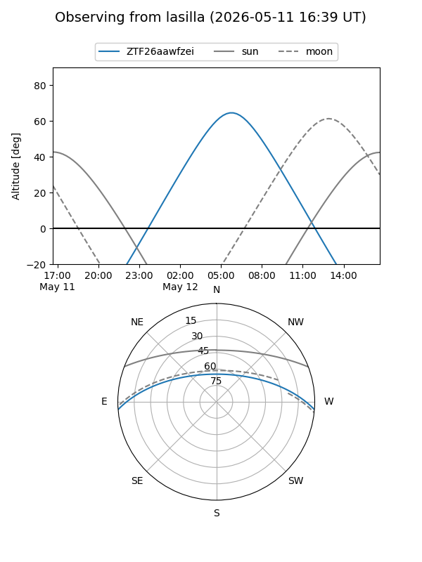
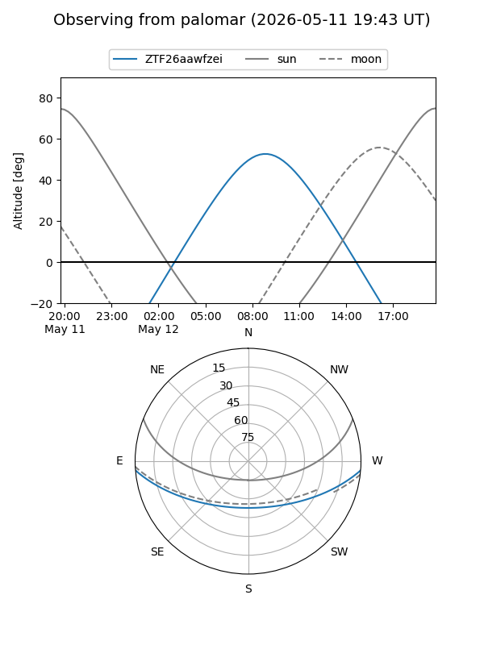

ZTF26aawfzei
Target ZTF26aawfzei at 2026-05-12 09:06
Aliases and brokers:
FINK: link
Lasair: link
ALeRCE: link
alt names
ZTF26aawfzei (ztf,fink_ztf)
Coordinates:
equatorial (ra, dec) = 245.5030,-3.85351
equatorial (HMS+DMS) = 16:22:00.72,-03:51:12.62
galactic (l, b) = (9.9795,+30.54098)
Flags:
Photometry:
last ztfg=18.81
1 ztfg detections
Lightcurve
Visibility


Additional plots